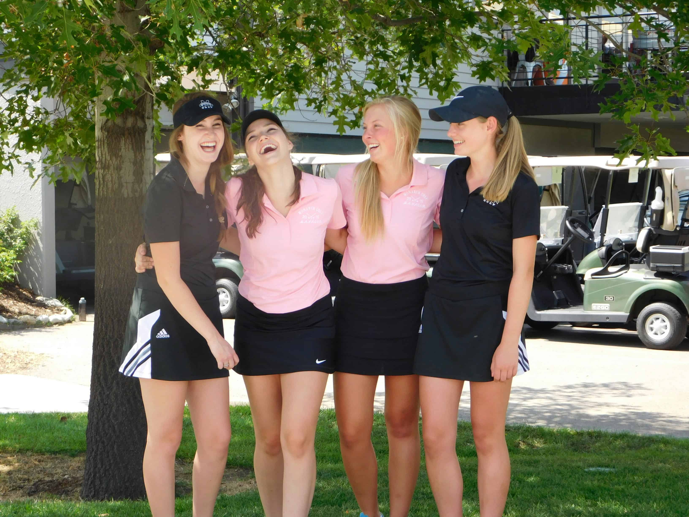

Who it is for
Targeted towards teens aged 13-17 who either live on are visiting the Gold Coast, this site is designed to be valiable and a smooth read for all. The benefits will primarily be gained for those who are new or first-time players, however anyone who may be planning a visit with their family and/or friends and who may have a little expeirence are also encouraged. Our curated information for each venue covers topics such as cost, activities, transport options, requirements and more!